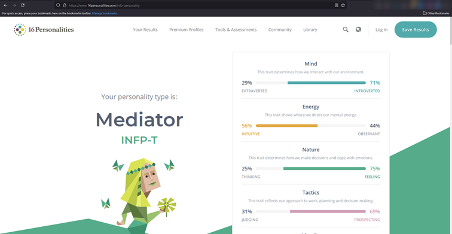
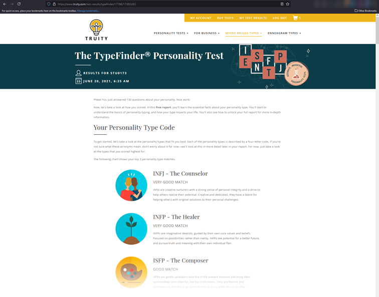
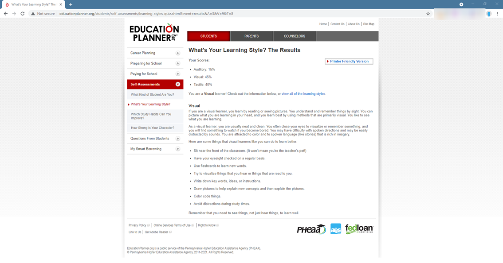

Three online personality tests were taken to gain an understanding of my personality traits. Two tests were based on the Myers–Briggs Type Indicator (MBI) tests. The MBI asks a series of question with the aim of providing the test taker with a likely personality type. The results shown below are inline with the personality traits I believe I possess. The third test taken was a test to help determine what type of learning style that I am best suited to. As highlighted by the test, I believe that I am a visual learner. Based on my experience I believe this to be true.
The results of the test confirmed personality traits that I am aware of. I tend to have an introverted personality. I am an empathic leader who makes decisions based on previous experience. I am a visual hands-on learner and finds it hard to learn from reading material such as technical manuals.
The awareness and understanding that can be provided by Myers–Briggs Type Indicator can assist individuals to better understand how to optimise their own performance. Additionally, their characteristics and traits can facilitate high performing teams by understanding each team members strengths and weaknesses and assigning individuals tasks that best match their strengths. Additionally, opportunities for team members to develop personally and professionally through mentoring and training to address weaknesses.
When forming a team, I look for strengths that may compliment my own. Every person has skills and experiences that are unique to the individual. Embracing and utilising skills and experiences of individual team members often create excellent team synergies.
Test 1: www.16Personalities.com
Result: INFP - The Mediator.

Test 2: www.Truity.com
Result: Very good match for INFJ - The Counsellor & INFP - The Healer.

Test 3: www.educationplanner.org
Result: Visual learingin style
